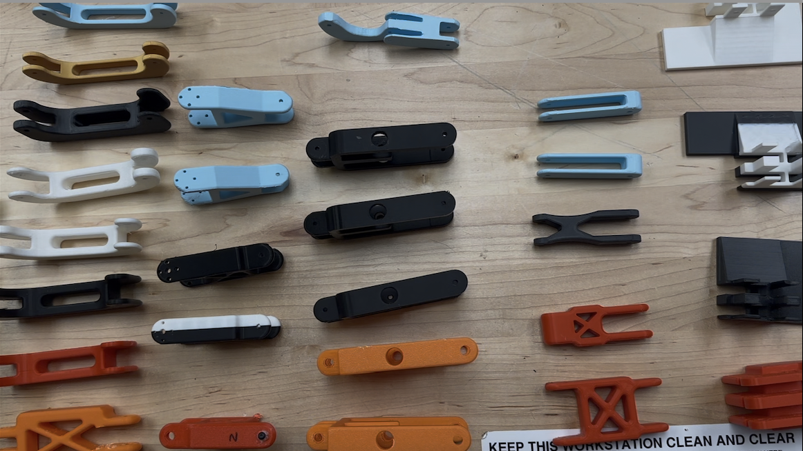
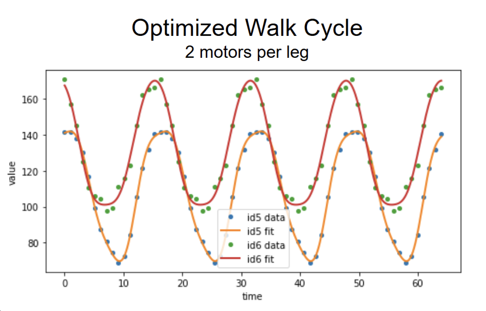
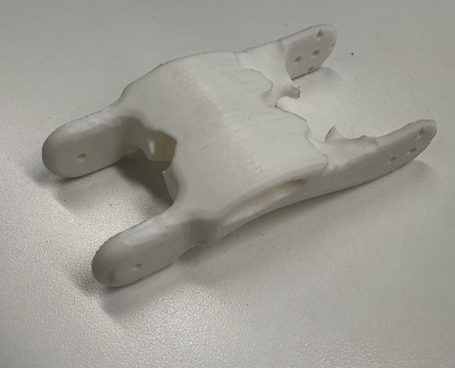
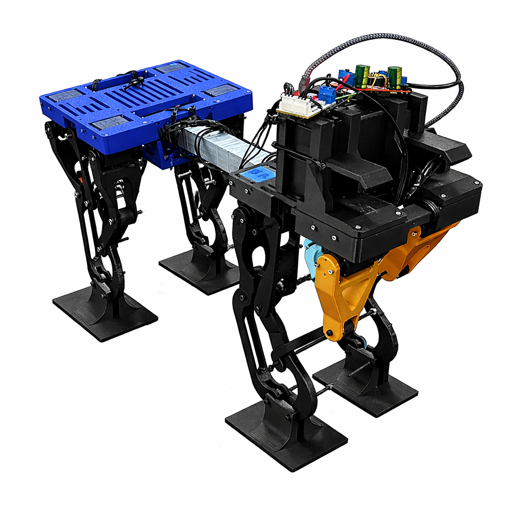
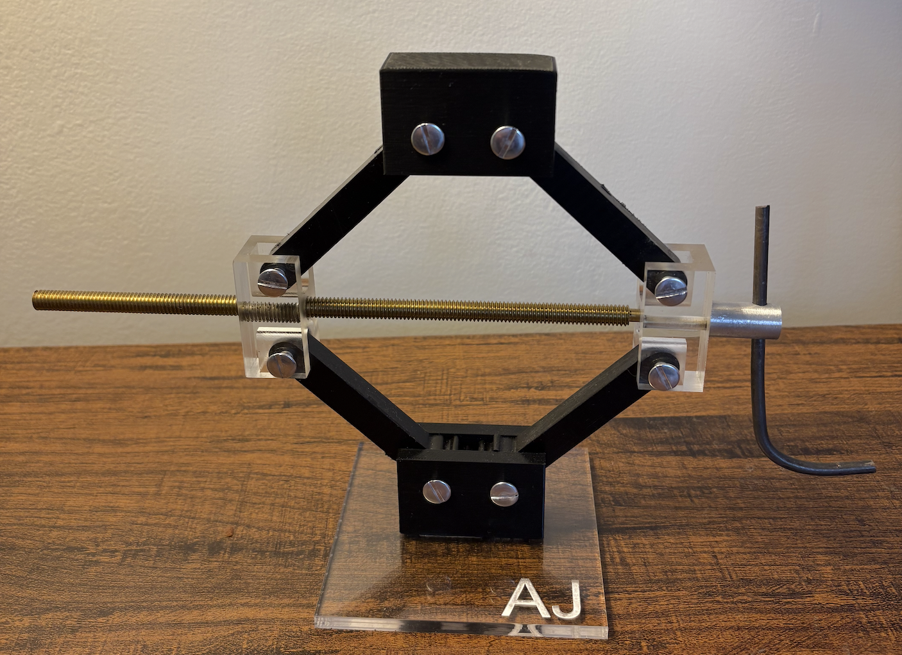
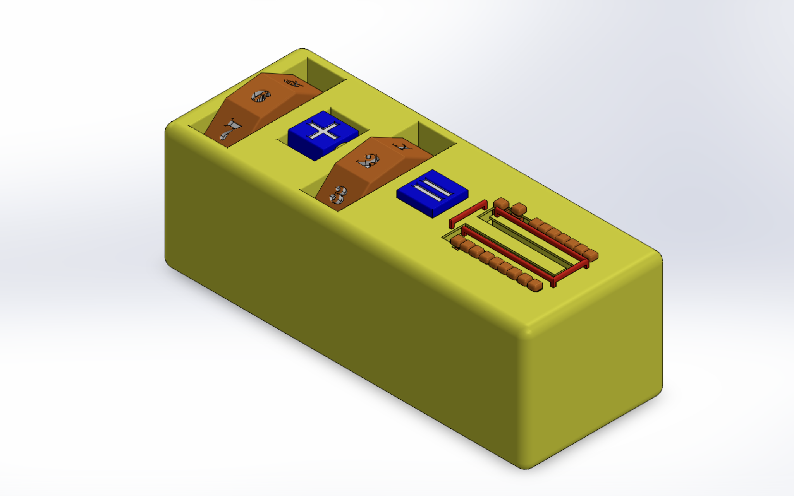

Engineering
Our initial goal was to build a custom bipedal robot capable of independently walking on two legs and transforming into a quadrupedal stance using a servo-actuated hinge. As we got closer to the final deadline and realised our final grading was exclusively based on the speed of the robot, we pivoted!
We instead connected two of our existing bases together using scrap aluminium and zipties and built a quadrupedal robot that was fast enough to get us the highest grade — all in the last 2 days! The takeaways ranged from the absurd number of iterations that more intentional thought would have saved, to robot CAD, algebraic topology for the pieces, Sim2Real simulation and gait patterns.







High-Speed Arcade Button Pressing Mechanism
Designed a single-motor linkage to rapidly reposition and press multiple arcade buttons, optimized for low inertia and repeatability.
Owned mechanism and control optimization — encoder feedback, homing and limits, hard stops — to maximize speed and reliability.
Iterated through prototypes and timed trials, learning what actually matters when tuning real machinery.
Video ↗Modeled a multi-DOF arm with DH parameters and derived forward and inverse kinematics.
Analyzed workspace and singularities and validated trajectories in simulation.
Used Finite Element Analysis to evaluate how various forces — rider weight, pedaling, and impact conditions — affect bicycle frame integrity, to understand stress distribution and material selection.
Identified failure conditions by simulating real-world cycling scenarios and stress variations across different riding positions and frame materials.
Researched how advanced swimming suits leverage fluid mechanics — particularly buoyancy and drag reduction — to enhance athlete performance.
Built a simplified model of a swimmer at Re = 3.3 × 10⁶ and solved it twice: bare skin over the full frontal area, then half that area covered by fabric at a lower drag coefficient.
Selected Machining Work
Mills, lathes, G-code and CNC, laser cutters, 3D printers, sawing, heat treating — mostly coursework, all of it hand-made.
Duesenberg 1921 Grand Prix — 1:64 model car
Report ↗A scalable production plan, then a prototype built to it — 3D printing, casting and injection molding from scratch, with tooling adjusted for tolerance and shrink.
Precision hammer
Turned and milled from stock, then heat treated — the first part I made to a drawing tolerance rather than by eye.
Report ↗
Scissor-jack
A geared lifting mechanism cut on the mill and lathe with G-code and CNC, assembled to work under load.
Report ↗
Reverse engineering a toy cement mixer truck
Full teardown, then the drivetrain and mixer geometry rebuilt in CAD from measurement.
Novel toy design
A counting mechanism for young children, designed around a single moving part.
Report ↗